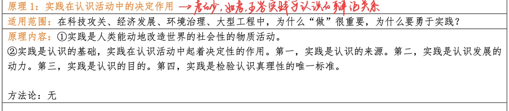
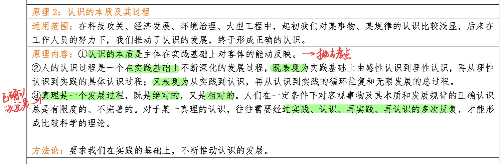

1题单选
习近平新时代中国特色社会主义思想是推进理论创新的光辉典范。新时代谱写马克思主义中国化时代化新篇章，要坚守理论创新的基础和前提，坚守好理论创新的“魂”和“根”。中国化时代化的马克思主义的“魂脉”和“根脉”是（）
A. 马克思主义和中华优秀传统文化
B. 共产主义社会理想和“天下大同”理想
C. 全人类共同价值和社会主义核心价值观
D. 共产主义远大理想和中国特色社会主义共同理想
从哪里答：第(1)问用实践与认识的辩证关系：调查研究是实践活动，能获得大量感性材料；但感性认识必须经过去粗取精、去伪存真、由此及彼、由表及里的加工，才能上升为理性认识，所以调查并不自然产生科学结论。第(2)问用矛盾普遍性与特殊性、认识过程的反复性：解剖麻雀是从个别到一般，举一反三把个别经验上升为普遍规律，再回到实践中指导同类问题。
结合材料回答问题：为全面贯彻落实党的二十大精神，党中央决定，把大兴调查研究作为在全党开展主题教育的重要内容。习近平总书记就“深入调查研究”提出明确要求，强调既要学会调查，也要擅长研究，“在调查的基础上深化研究，提高调研成果质量，切实把调研成果转化为解决问题、改进工作的实际举措”。这为全党大兴调查研究提供了重要遵循。调查研究要善于抓问题、求答案。调查是全面、客观、准确掌握情况的过程，并不自然产生科学观，点、得出正确结论。开展调查研究，要做好真实情况和各种问题的调查，也要在调查的基础上进行深入细致的研究。调查研究要敢于发现问题、正视问题、解决问题，“直奔问题去”。调查研究的问题从哪里来？人民群众最关心的就业、教育、医疗、托育、养老、住房等现实问题，维护社会稳定、防灾减灾救灾和重大突发公共事件处置保障短板等重点难点问题，贯彻新发展理念、构建新发展格局、推动高质量发展等重大问题，都是调查研究的题目；工作中易忽视的细节、易梗阻的程序，都可以成为调查研究的问题切入点。习近平总书记每到基层考察调研，总会从贴近民生的细节入手，从最细微的事项问起：走进六盘山区破矮的土坯房舀起一瓢水尝尝水质，向技术人员询问机械的工作原理、购买价格、插秧效率，向出租车司机征询对年节打车难的解决办法，等等，确保“真真实实把情况摸清楚”’。早年在福建省工作时，针对福建林农守着“金山银山”过穷日子的状况，习近平抓住“山要怎么分”“树要怎么砍”“钱从哪里来”“单家独户怎么办”四个难题深入调研，推出了有针对性的改革举措。只调查不研究，就提不出解决问题的有效对策；只研究不调查，决策难免成为无源之水、无本之木。只有把调查和研究很好统筹起来，调查研究才能成为获得真知灼见的源头活水，成为领导干部提高认识能力、判断能力和工作能力的基本功。调查研究的关键在实效。衡量调查研究搞得好不好，不是看调查研究的规模有多大、时间有多长，也不是光看调查报告写得怎么样，关键要看调查研究的实效，看调查成果的运用，看能不能把问题解决好。实践告诉我们，深入一线，“进行解剖麻雀式的调研”，发现问题，举一反三，从“解决一个问题”到“解决一类问题”，这样调查研究的系统性、预见性、创造性、实效性就会大大增强。摘编自《人民日报》（2023年6月8日、8月28日、9月5日）（1）如何理解“调查是全面、客观、准确掌握情况的过程，并不自然产生科学观点、得出正确结…


暂无对应带背讲义内容
暂无对应带背讲义内容
从哪里答：第(1)问从理想与现实的关系、实现理想的条件说明，理想转化为现实需要艰苦奋斗。第(2)问从人生价值（自我价值与社会价值）、人生价值的评价尺度、服务人民奉献社会说明，青年要在磨砺中增长才干、把小我融入大我。
结合材料回答问题：材料12023年5月1日，习近平总书记给中国农业大学科技小院的学生回信强调：“你们在信中说，走进乡土中国深处，才深刻理解什么是实事求是、怎么去联系群众，青年人就要‘自找苦吃’，说得很好。新时代中国青年就应该有这股精气神。”习近平总书记的回信，既是对新时代中国青年“自找苦吃”精神的充分肯定，也是对他们的殷切期望。摘编自《光明日报》（2023年5月10日）材料2河南省林县位于太行山东麓，历史上属于严重干旱地区。史料记载，林县山多水少，土薄石厚，凿井无泉，致远汲深，居民轹釜待炊，于是有取水十余里外者，老弱妇女抱瓮蹀踱，人畜疲极。林县人民祖祖辈辈想水、盼水，始终怀有一个水的梦想。新中国成立后，党和政府十分关心林县的缺水问题。1960年，“引漳入林”工程启动，林县人民历经十年，修建出被誉沟“人造天河”的红旗渠，在太行山崇山峻岭中创造了奇迹。被称为红旗渠咽喉工程的青年洞，由300名青年组成突击队，经过1年5个月的奋战，用蚂蚁啃骨头的精神，将红旗渠最艰难的部分延伸了616米。青年突击队员以不怕苦、不畏难、不惧牺牲的忘我投入，把红旗渠精神书写在万仞壁立的太行山上。2022年11月，习近平总书记考察红旗渠时指出，“年轻一代要继承和发扬吃苦耐劳、自力更生、艰苦奋斗的精神，摒弃骄娇二气，像我们的父辈一样把青春热血镌刻在历史的丰碑上。”摘编自《人民日报》（2022年11月13日）材料3随着时代的变化，“吃苦”的内在要求和外在形式也在不断变化。今天，我们已经实现全面小康，“苦”已经不是缺衣少食的物质之苦，更多体现在沟解决“卡脖子”技术的攻坚克难，在抢险救灾前线的冲锋陷阵，在乡村振兴主战场的摸爬滚打，在保卫祖国边疆的无畏无惧……习近平总书记指出：“青年时代，选择吃苦也就选择了收获，选择奉献也就选择了高尚。”建功重大工程，青年建设者不畏艰险、矢志创新，“青年突击队”“青年攻坚组”的旗帜高高飘扬；面对重大疫情，32万余支青年突击队、550余万名青年拼搏在医疗救护、交通物流、项目建设等抗疫一线；奋战脱贫攻坚，千千万万青年扶贫干部深入农村，在岗位上呕心沥血，与乡亲们同甘共苦⋯•新时代中国青年用实际行动，彰显出肯吃苦、战胜苦的锐气与担当。青春因磨砺而精彩。越是美好的梦想，越需要发扬“自找苦吃”的精神。在最能吃苦的年纪不忘“自找苦吃”，新时代青年定能在“自找苦吃”的过程中收获成功。摘编自…


暂无对应带背讲义内容